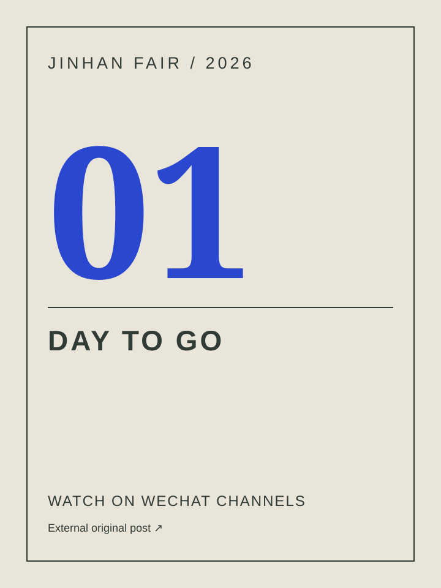

从买家需求出发
围绕家居、礼品、园艺、灯饰及季节装饰，梳理材质、使用场景与选品方向。
以广州（锦汉）家居用品及礼品展览会为核心，参与海外社媒内容运营：从英文文案、AI创意视频，到展前推广、评论私信与展会现场。
根据平台内容形态组织图片、短视频和文案，兼顾产品吸引力与采购信息。
围绕家居、礼品、园艺、灯饰及季节装饰，梳理材质、使用场景与选品方向。
产品介绍突出视觉亮点；趋势与采购向文案补充品类组合、市场应用及供应商连接。
用私信、登记、展区信息等行动提示，引导买家继续了解或留下具体需求。
产品图文、视频、评论与私信
视觉内容、Reels 与产品咨询
创意短视频与视觉吸引
Shorts 与视频内容呈现
行业表达与 B2B 采购信息
官方主页 ↗家居园艺视觉与选品灵感
以上为参与运营账号的后台总览，不等同于个人独立产出或纯自然流量。Facebook：2,511,923；Instagram：741,375（不含跨平台 Facebook 观看）；YouTube：1,774,587。
我参与海外社媒选题、英文营销文案、AI 创意视频、评论私信与买家沟通，以及展前和现场内容制作。不同阶段保留原始作品、截图与现场记录供查看。
从产品的材质、趋势、场景和季节需求出发，再考虑海外买家关注的选品方向。视觉平台突出第一眼的画面变化；LinkedIn 等 B2B 场景补充品类组合、供应商连接和采购信息。标题、正文与 CTA 根据平台及受众调整。
What draws attention? What helps a buyer take the next step?
在每月内容策划表中，为同一主题保留不同表达版本。这里选取两组原文，展示从兴趣切入到采购展开的变化。
🍂 #JINHANFAIRNewLaunch | Think Beyond the Season Is your business already sourcing for the next autumn & harvest season? Seasonal sourcing starts well ahead of the selling season. While retailers and buyers plan upcoming collections, manufacturers are already developing new products and fresh designs for the next buying cycle. From pumpkins and gourds to dried botanicals and harvest-inspired décor, explore seasonal collections from experienced manufacturers at #JINHANFAIR and discover products to bring into your next assortment. 📩 DM us to connect with seasonal décor suppliers.
以提前选品的提问切入，快速连接季节需求与供应商。
🍂 #JINHANFAIRNewLaunch | Autumn Décor: Building a More Versatile Seasonal Assortment Autumn décor is evolving beyond traditional harvest styling. For retailers and importers, the opportunity lies in creating coordinated seasonal assortments that combine natural textures, warm palettes and commercially versatile designs. This season, classic pumpkins are refreshed through woven textures, soft textiles, wood-look finishes and handcrafted details. Burnt orange, burgundy and earthy neutrals pair with wreaths, berries and botanical elements — making it easier to build collections across tabletop décor, home accessories and visual merchandising. For B2B buyers, material diversity and coordinated design can help extend autumn collections across different retail settings, price points and product categories. At the 54th #JINHANFAIR, explore 300,000+ new products from 1,200+ manufacturers across 90,000㎡ — including seasonal décor, home décor, gifts, lighting and more. 🍁 Build coordinated autumn collections. 🧺 Explore diverse materials & craftsmanship. 🌍 Connect with sourcing opportunities from China. Looking for autumn décor suppliers? DM us with your sourcing requirements.
补充材质、配色、陈列与组合采购，让内容面向具体的商业应用。
🌟 #JINHANFAIRNewLaunch | Planters for Every Market 🌿 Looking to expand your garden and outdoor décor assortment? Explore decorative planters in a wide range of shapes, sizes, finishes, and design styles—created for garden centres, home décor retailers, landscaping projects, and hospitality spaces. From compact indoor pots to statement outdoor planters, discover versatile collections from experienced Chinese manufacturers and source products suited to different markets and price segments. 📩 DM us to connect with planter and garden décor suppliers!
从花园中心、家居零售及酒店等应用场景介绍产品范围。
✨ #JINHANFAIRNewLaunch | Expanding Your Planter Product Line 🪴 For importers and wholesalers already sourcing standard ceramic planters, textured finishes and coordinated product series offer a practical direction for range expansion and differentiation. The latest collections feature embossed geometric surfaces, ribbed structures, aged bronze tones, antique silver finishes and handcrafted ceramic effects. With options ranging from tabletop vessels to large statement planters, buyers can develop coordinated ranges across different sizes, applications and price segments. For wholesalers, distributors and project buyers, these diversified designs create more opportunities for private-label development, hospitality procurement and landscaping projects. Looking for planter and garden décor suppliers? DM us with your required materials, sizes, finishes and target price range, and we’ll recommend suitable manufacturers.
进一步写到系列开发、饰面、尺寸和目标价格，给买家清楚的咨询方向。
节选保留原文正文，完整登记信息与标签见作品目录。以上是内容版本对比，不作为同条件投放的 A/B 测试结论。
从产品图出发，尝试拟人、线稿转场、虚实转换与生活场景，让短视频的创意服务于产品特点。
将热点动作与园艺产品结合
以线稿变化制造首屏悬念
Instagram / Facebook沉浸式内容
用画框内外的互动突出产品
用日夜切换呈现灯饰的使用价值
把线上浏览转成视觉叙事
家居风格与空间氛围
从组合过程到使用场景
花园摆件的互动、椅子从线稿变成实物、食盆走出广告画框——创意围绕产品本身展开。场景类视频则用光线、陈设和氛围，让观众更容易理解它的使用方式。
查看全部视频以下是锦汉实习的个人工作记录。它们描述内容产出与触达范围，不代表独立账号增长、已成交订单或经审计的转化率。
以下原有后台截图展示账号总览与部分内容表现，均沿用各自的统计口径；MOMO 与 YouTube 单条累计观看属于不同记录，不计入上述个人工作量。
将作品与对应后台截图放在一起，便于查看内容形式、观看与互动。数据为原帖和广告合并口径。
| 内容 | 浏览量 | 互动 | 补充记录 | 作品与数据 |
|---|---|---|---|---|
| 买家看品图文 | 26.5K | 1.9K | 185 次链接点击 | |
| 节庆装饰图文 | 62.8K | 1.7K | 27 次链接点击 · 12 关注 | |
| 木质家具视频 | 91.4K | 70 | — | |
| 柔和色彩餐桌视频 | 84.4K | 183 | — | |
| 毛毯视频 | 80.9K | 155 | — | |
| 花朵灯饰视频 | 71.7K | 394 | — | |
| 园艺户外图文 | 78.3K | 601 | 28 次链接点击 · 13 关注 | |
| 春季展园艺回顾 | 79.5K | 274 | 93 次链接点击 | |
| 玻璃桌面装饰视频 | 61.0K | 161 | — | |
| 花卉灯饰与花瓶视频 | 48.9K | 181 | — |
上述数据不作自然流量、独立触达人数或成交数量解释；未在截图中确认的指标不补填。
保留日常写作提示与修改过程，展示如何给出受众、产品、语气和行动要求，再逐步调整成可用文案。
展会背景、产品品类、画面内容和目标读者。
选择产品介绍、场景、趋势或买家采购视角。
检查标题是否具体，减少空泛措辞，修改结构与语气。
结合展区、供应商连接或登记，调整 CTA 与标签。
日常修改指令 / 原稿节选“结尾的CTA要换一下句式什么的，可以换成在哪一层楼，或者别的，标题不要太抽象的，要具体的”
展示为当时的写作原稿与方法记录，原稿中的市场引用保留其历史写法。
通过英文及法语、西语文字回复，承接产品咨询、购买意向和合作消息。以下展示实际沟通记录，身份与联系方式已脱敏。
买家提出家居用品、纪念品、塑料制品及厨具需求后，回复相应供应资源，并收集姓名、公司、邮箱和电话。截图记录到客户已提供资料这一阶段。
针对文具视频和目录需求，说明专门同事将联系对接，再邀请客户提供资料。记录展示到留资，不将后续成交作为已完成结果。
目录中的价目表案例包含系统自动回复；广告进入的询盘按原界面呈现。各截图为不同客户，分别展示。
协助买家了解社媒活动、查看手机操作，并记录现场接触。内容运营也包含面对面的表达与服务。
以上三张本人工作证按授权保留原图；目录中的买家证件已遮挡身份信息。
围绕展区、品类与现场服务制作展前视频，逐步补充“看什么、去哪里、如何参与”的信息。
这三条展前倒计时作品包含在锦汉实习的 24 条 AI 视频产出中，不额外叠加。前两条可在本站播放；前 1 天保留微信视频号原帖链接。
展前3天 · 展区、现场服务与APP导览；本地高清版
展前2天 · 家居与花艺品类及开幕提醒；本地兼容版

↗视频号原帖 ↗展前1天的AI倒计时视频；通过微信视频号原帖观看
节日灯饰与倒计时视觉
餐厨新品与展区信息
宠物主题与现场服务
园艺场景与户外品类
视频中保留当届展会信息，作为历史项目作品展示；微信视频号原帖在站外打开。
海外社媒 · 品牌内容 · 中英文文案 · 创意视频
原始作品保留发布时的语言。
↑